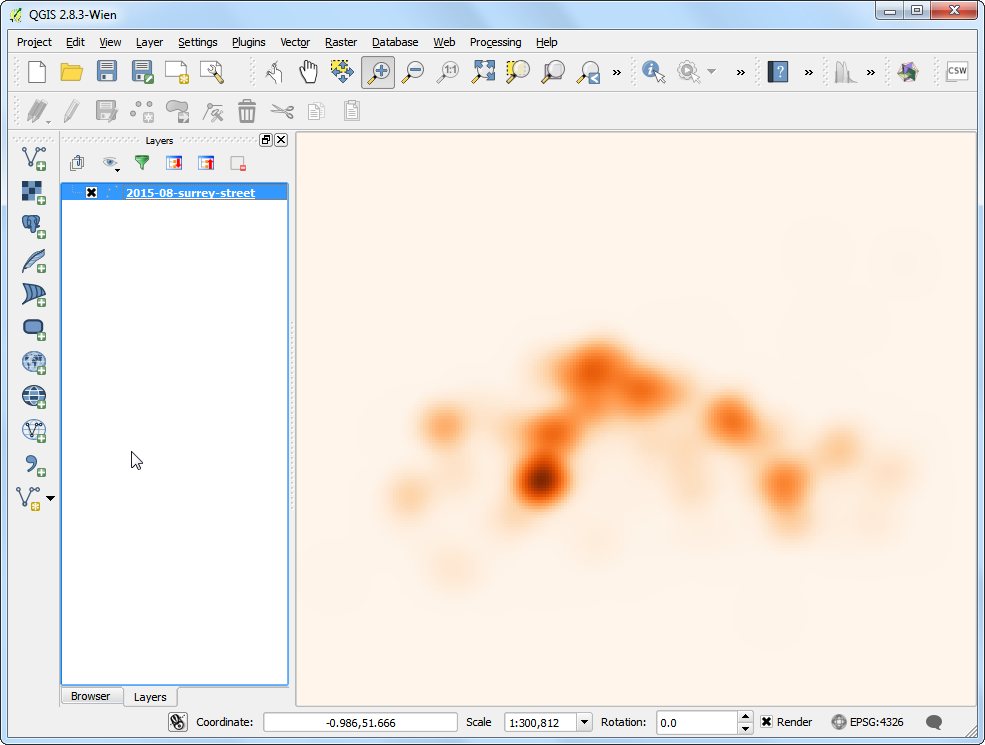

Searching and Downloading OpenStreetMap Data
[ Download PDF A4 Letter ]
Getting high quality data is essential for any GIS task. One great resource for
free and openly licensed data is OpenStreetMap(OSM) . The OSM database consits of streets, local
data as well as building polygons. Getting access to OSM data in a GIS format
is integrated in QGIS. This tutorial explains the process for searching,
downloading and using OSM data in QGIS.
Overview of the task
Search for London in OSM database, browse and select a part of the city, and
extract all pub locations as a shapefile.
Procedure
- We will use 2 plugins to accomplish the task. Make sure you have installed
OSM Place Search and OpenLayers plugins. See Using Plugins for
instructions on downloading plugins.

- The OSM Place Search plugin will install itself as a Panel in QGIS.
You will see a new panel titled OSM place search... in QGIS.

- The OpenLayers plugin is installed under the Plugin menu. This plugin
allows you to access basemaps from various providers in QGIS. Let’s load the
OpenStreetMap basemap in QGIS by going to .

- You will see a world map loaded in QGIS.
Nota
If you do not see any data - make sure you are online - as the basemap tiles
are fetched from the internet. You can also use the Pan tool to move the
map canvas slightly, which will trigger a refresh of the basemap.

- Now, let’s search for London. Type the query in the Name
contains... box in the OSM Place Search panel. You can hover over the
results and the appropriate place will be highlighted on the map. Select the
first result - which the city of London in UK - and click the
Zoom button.

- You will see the base layer move and center around the city of London. You
can use the Zoom tool to zoom and select the exact area of your
interest. For this tutorial, you can zoom in the center of the city as
shown.

- Now we can download the data displayed on the map canvas. Go to
.

- In the Download OpenStreetMap data dialog, choose
From map canvas as the Extent. Choose the path and
name the output file as london.osm.

- The downloaded file with the .osm extension is an text file in the OSM
XML format. We first need to
convert it into a suitable format that is easy to consume in QGIS. Go to
.
Nota
Now that we do not need the OSM Place Search functionality, you can
click the close button to remove it from the main window. If you need to use
it again, you can enable it from (Windows) or (Linux).

- Choose the downloaded london.osm as the Input XML file.
Name the Output SpatiaLite DB file as london.osm.db. Make
sure the Create connection (SpatiaLite) after import button is
checked.

- Now the last step. We need to create SpatialLite geometry layers that can
be viewed and analyzed in QGIS. This is done using .

- The london.osm.db file contains all feature types in the OSM database -
Points, Lines and Polygons. GIS layers typically contain only one type of
feature, so you need to choose one. Since we are interested in point
locations of pubs, here you need to choose Point (nodes) as the
Export type. You would choose Polylines (open ways)
if you wanted to get the road network. Name the Output layer
name as london_points. GIS data has 2 parts to it - location and
attributes. We are also interested in the name of the pub - not just
its location, so we need to export that information as well. Click on
Load from DB under Exported tags section. This will
fetch all attributes from the london.osm.db file. Check
name and amenity tags. See OSM Tags to learn more about what
each attribute means. Make sure the Load into canvas when
finished is checked, and click OK.

- You will see a new point layer named london_points loaded in QGIS. Note
that this contains ALL points in the OSM database for the viewport.
Since we are interested only in pubs, we need to write a query to select
only those. Right click on london_points layer and select
Open Attribute Table.

- You will note that some features have the attribute value of pubs
listed under the amenity column. Click on Select
features using an expression button.

- Enter the expression “amenity” = ‘pub’ and click Select.

- Back in the QGIS Canvas, you will see some points highlighted in yellow.
These are the result of our query. Right-click the london_points layer
and choose Save Selection As....

- In the Save vector layer as... dialog, enter the name of the
output file as london_pubs.shp. Leave all other options as they are and
make sure the Add saved file to map option is checked. Click
OK.

- You will see a new layer named london_pubs in the QGIS canvas. Uncheck
the london_points layer as we don’t need that anymore.

- The extraction of the pubs shapefile layer is now complete. You can use the
Identify tool to click on any of the point as see its
attributes.